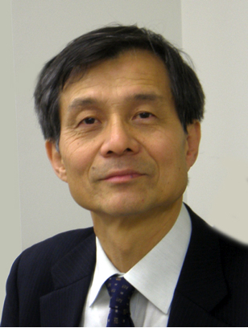

INPUT
An almost imperceptible chiral seed
A tiny imbalance biases the first molecules of product.
ASYMMETRIC AUTOCATALYSIS · CHIRAL AMPLIFICATION
A chemist who demonstrated asymmetric autocatalysis: a chiral product catalyses its own formation while amplifying a minute initial imbalance.

WHY HE MATTERS
In the Soai reaction, the chiral product also acts as a catalyst. Repeated cycles can turn an extremely small initial imbalance into a strong preference for one molecular handedness, giving chemistry a concrete model for symmetry breaking.
A tiny imbalance biases the first molecules of product.
The product accelerates formation of more product with the same handedness.
Successive cycles magnify the original bias into a dominant form.
THREE-PASS REVIEW
Soai pursued a difficult question for years: could a product catalyse its own asymmetric formation and simultaneously increase its chiral purity? The eventual reaction linked persistence with a rare chemical feedback loop.
VERIFIED READING